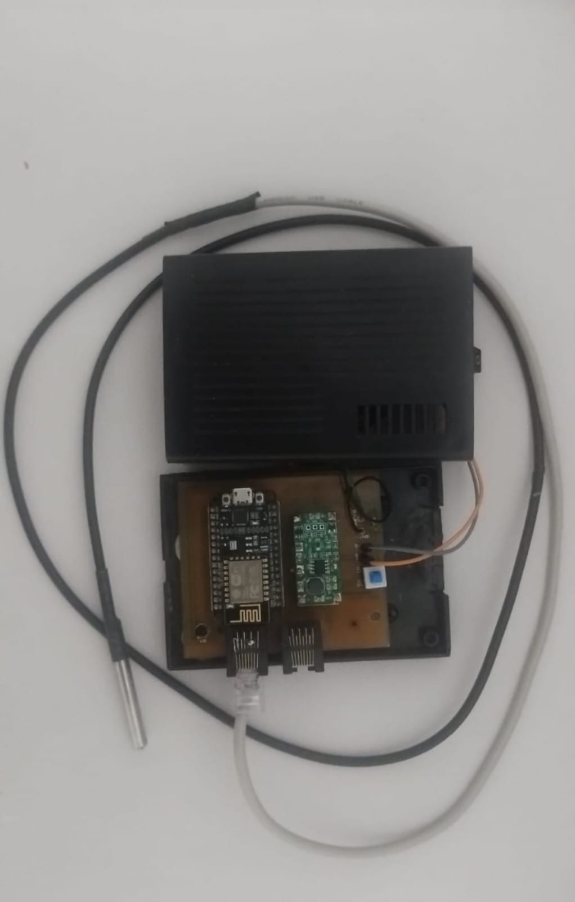
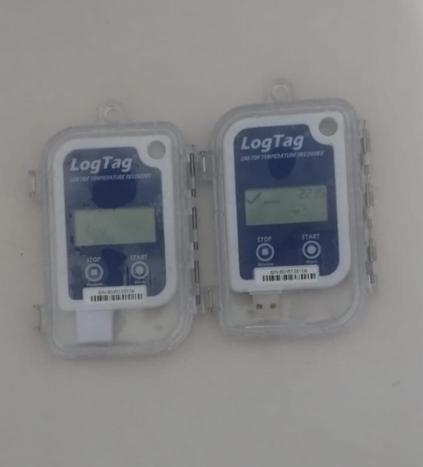

<div class="page" id="anexo-a">
  <section id="anexo-a">
<h2>Anexo A: Código Fuente del Firmware ESP8266 y Esquema Electrónico</h2>
<p>Se presentan los fragmentos más representativos del firmware modular SmartTemp y el esquema de conexión electrónica.</p>

<h3>A.1 Hardware Implementado</h3>

<p class="figure-caption">Figura A.1. Sensor DS18B20 conectado a ESP8266 NodeMCU</p>


<p class="figure-caption">Figura A.2. Datalogger LogTag UTRID-16 para validación de precisión</p>


<p class="figure-caption">Figura A.3. Sensor virtual implementado para pruebas y desarrollo</p>

<h3>A.2 Esquema de Conexión Electrónica</h3>
<pre class="diagram">
  ┌─────────────────────┐
  │     ESP8266          │
  │   (NodeMCU/Wemos)   │
  │                     │
  │  GPIO14 (D5) ───────┼──── Data (DQ) ── DS18B20
  │                     │         │
  │                     │     ┌───┤
  │                     │     │ 4.7kΩ (pull-up)
  │  3.3V ──────────────┼─────┘   │
  │                     │         │
  │  GND ───────────────┼──── GND ── DS18B20
  │                     │
  │  A0 (ADC) ──────────┼──── Divisor de voltaje
  └─────────────────────┘
</pre>

<table>
  <thead><tr><th>Pin ESP8266</th><th>Función</th><th>Componente</th></tr></thead>
  <tbody>
    <tr><td>GPIO14 (D5)</td><td>OneWire Data</td><td>DS18B20 (DQ)</td></tr>
    <tr><td>A0 (ADC)</td><td>Lectura voltaje</td><td>Divisor de voltaje</td></tr>
    <tr><td>3.3V</td><td>Alimentación</td><td>DS18B20 (VDD), Pull-up 4.7kΩ</td></tr>
    <tr><td>GND</td><td>Tierra</td><td>DS18B20 (GND), Divisor</td></tr>
  </tbody>
</table>

<h3>A.3 Código Fuente Principal</h3>
<h4>funcional_remoto_modular_.ino</h4>
<pre><code>#include &lt;WiFiClient.h&gt;
#include &lt;ESP8266HTTPClient.h&gt;
#include &lt;ESP8266WebServer.h&gt;
#include &lt;OneWire.h&gt;
#include &lt;DallasTemperature.h&gt;
#include &lt;ArduinoJson.h&gt;
#include &lt;EEPROM.h&gt;
#include &lt;PubSubClient.h&gt;
#include &lt;user_interface.h&gt;
#include &lt;LittleFS.h&gt;
#include &lt;WiFiUdp.h&gt;
#include &lt;time.h&gt;

#include &quot;config.h&quot;
#include &quot;types.h&quot;
#include &quot;sensor.h&quot;
#include &quot;storage.h&quot;
#include &quot;wifi_manager.h&quot;
#include &quot;mqtt_manager.h&quot;
#include &quot;web_server.h&quot;
#include &quot;mode_manager.h&quot;
#include &quot;sensor_fix.h&quot;

// ========== VARIABLES GLOBALES ==========
const char* my_ssid = WIFI_SSID;
const char* my_password = WIFI_PASSWORD;
const char* serverIP = SERVER_IP;
const uint16_t serverPort = SERVER_PORT;
const char* API_ENDPOINT_PATH = API_ENDPOINT;

// ... (295 líneas omitidas)</code></pre>
<h4>mqtt_manager.cpp</h4>
<pre><code>#include &quot;mqtt_manager.h&quot;
#include &quot;config.h&quot;
#include &quot;sensor.h&quot;
#include &quot;storage.h&quot;

// ========== MQTT: Helper para suscribir topics ==========
void mqttSubscribeAll() {
  mqttClient.subscribe(&quot;sensores/ping/request&quot;);
  mqttClient.subscribe(MQTT_ACK_TOPIC);
  mqttClient.subscribe(MQTT_TIME_RESPONSE);
  String configTopic = &quot;sensores/config/&quot; + sensorID;
  mqttClient.subscribe(configTopic.c_str());
  String resetTopic = &quot;sensores/reset/&quot; + sensorID;
  mqttClient.subscribe(resetTopic.c_str());
}

// ========== MQTT: Intentar conectar a un servidor con N reintentos ==========
bool tryMQTTServer(const char* server, int port, const char* label, int retries) {
  String clientId = &quot;ESP8266_&quot; + sensorID;
  
  for (int i = 1; i &lt;= retries; i++) {
    mqttClient.disconnect();
    espClient.stop();
    espClient = WiFiClient();
    mqttClient.setClient(espClient);
    mqttClient.setServer(server, port);
    
    Serial.printf(&quot;MQTT %s %s:%d (intento %d/%d)\n&quot;, label, server, port, i, retries);
    
    if (mqttClient.connect(clientId.c_str())) {
// ... (394 líneas omitidas)</code></pre>
<h4>sensor_core.cpp</h4>
<pre><code>#include &quot;sensor.h&quot;
#include &quot;config.h&quot;
#include &quot;storage.h&quot;
#include &lt;EEPROM.h&gt;

const float VOLTAGE_EMA_ALPHA = 0.3;
bool sensorChanged = false;
String previousSensorID = &quot;&quot;;

// initSensor: Inicializa sensor Dallas DS18B20.
// En deep sleep: solo carga IDs de EEPROM sin encender hardware (ahorro bateria).
// En continuo: escanea bus OneWire completo y registra sensores fisicos.
// readSensorOptimized() es el unico que enciende/apaga el sensor en deep sleep.
void initSensor() {
  bool skipHardwareScan = (currentMode == MODE_DEEP_SLEEP);

  if (!skipHardwareScan) {
    // Modo continuo: escaneo completo del bus OneWire
    digitalWrite(POWER_PIN, HIGH);
    delay(SENSOR_POWER_UP_DELAY);

    sensors.begin();
    sensorCount = sensors.getDeviceCount();
    Serial.printf(&quot;Sensores encontrados: %d\n&quot;, sensorCount);

    if (sensorCount &gt; MAX_CHANNELS) sensorCount = MAX_CHANNELS;

    for (int i = 0; i &lt; sensorCount; i++) {
      if (sensors.getAddress(sensorAddresses[i], i)) {
        sensors.setResolution(sensorAddresses[i], SENSOR_RESOLUTION);
// ... (200 líneas omitidas)</code></pre>
</section>
</div>